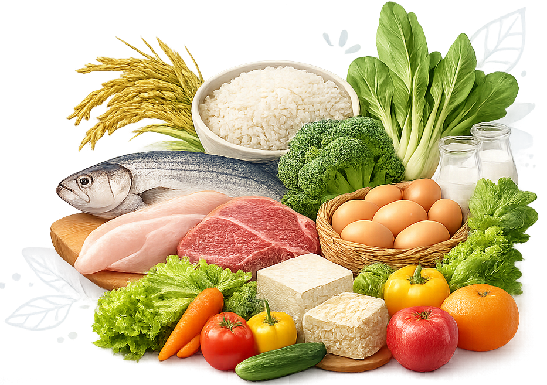

Kalkulator Harga Zat Gizi
Bandingkan harga zat gizi dua bahan pangan untuk membantu memilih bahan yang lebih ekonomis dan bergizi.

1 Bahan Makanan A
Bahan Pangan Utama2 Bahan Makanan B (Perbandingan)
Bahan Pangan PembandingInfo BDD
Kalkulator secara otomatis menghitung Berat Dapat Dimakan (BDD) berdasarkan jenis bahan yang dipilih untuk akurasi biaya per gram zat gizi.
Optimization
Gunakan fitur perbandingan untuk menemukan bahan pangan dengan harga zat gizi yang lebih ekonomis sesuai kebutuhan Anda.
Sumber Kandungan Gizi
Data Kandungan Gizi dan BDD bersumber dari Komposisi Pangan Indonesia (TKPI) 2017, NutriSurvey, Fatsecret, dan penelitian terdahulu. Masukkan berat bahan pangan sebelum diolah (berat kotor). Sistem akan menyesuaikan perhitungan berdasarkan nilai Bagian yang Dapat Dimakan (BDD).